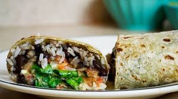

What Makes A Burritto Perfect

Burrittos are almost always good. But are they always perfect? Absolutley not. There are certain attributes that a burritto has to have to make it the perfect burritto.
- The softness and thickness of the tortilla
- The circumfrence of the burritto
- The ratio of suaces to to solid ingredients
- And finally the crunchiness of the chips on the side
Tortilla
Circumference
Sauces To Solids